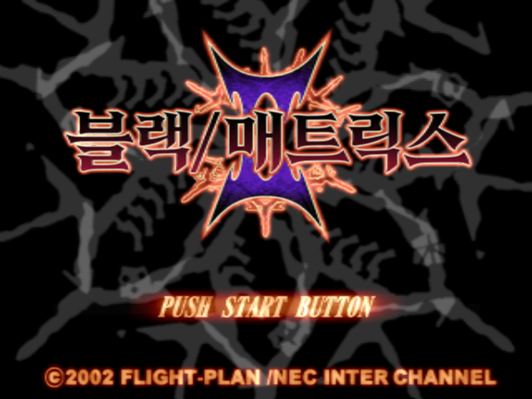

블랙 매트릭스 II
Black/Matrix II
흰 날개의 천사가 사는 천계, 날개 없는 인간의 세계, 검은 날개의 마족이 사는 마계. 서로 떨어져 살아가는 세 세계는 상대를 의심하며 각자의 질서를 지킵니다.
인간들은 천사의 말을 듣고 마계를 악으로 여기지만, 마계의 여왕 제나로즈는 누구보다 인간을 아끼는 인물로 알려져 있습니다. 선과 악을 단순히 나눌 수 없는 세계를 무대로 이야기가 펼쳐집니다.
대사와 선택지, 메뉴와 아이템을 한글화하고 한 화면에서 한글 이름을 조합해 입력할 수 있게 했습니다. 한글 타이틀 로고와 흑백 실루엣, 지역명·전투 제목·승리 조건 이미지도 적용했습니다.
일본판 SLPS-20187용 플레이 검수판입니다. 원본 해시와 적용 방법은 ZIP 안의 readme.txt에 있습니다.
